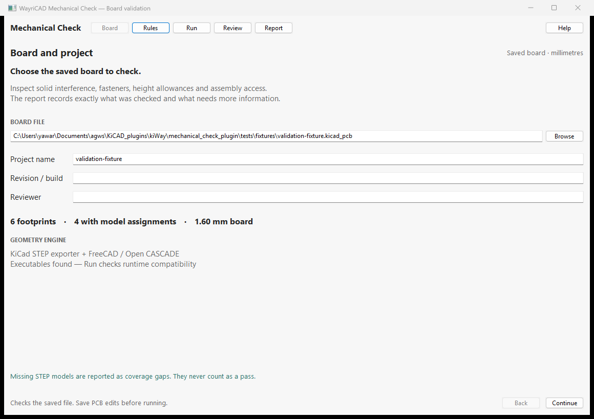

Review physical fit and model coverage using local files. Nothing is sent to a server.

The IPC launcher uses the official kicad-python client to find the saved board, then opens a separate local window using KiCad 10 Python. If context is unavailable, select the file in that window. Enable KiCad's API in Preferences to use automatic context.
The native viewer requires pcbnew, wxPython and PyOpenGL. Exact solids require a separate FreeCAD Python installation with FreeCAD, Part and Import. No geometry kernel is downloaded by the plugin.
Run python launch.py --doctor to see discovered executable paths. Override discovery with WAYRICAD_MECHANICAL_KICAD_CLI, WAYRICAD_MECHANICAL_KICAD_PYTHON and WAYRICAD_MECHANICAL_FREECAD_PYTHON. Finding executables does not prove all runtime modules are available.
All lengths are millimetres. Height zones use KiCad board XY coordinates. Enclosure STEP models and 3D keepout bounds use exported CAD XYZ coordinates, with board export origin 0×0 mm; align external geometry before checking. Keepout bounds are [xmin, ymin, zmin, xmax, ymax, zmax]. Use the generated default rules as the settings reference: python launch.py --init-rules rules.json.
STEP component collisions, minimum surface separation, enclosure fit and board penetration use actual solid geometry. Hardware, pad proximity, independent XY/Z allowances and nozzle access use conservative envelopes and require engineering review. Missing/unresolved/hidden/invalid models, absent kernels or unconfirmed mounting intent prevent a complete pass. Waivers require a reason and are scoped to board/model hashes and physical rules.
This checks static assembly fit. It does not replace electrical DRC or model machine trajectories, cable bending, rigid-flex folding, tolerance stacks or solder processes. KiCad 10 is the extraction engine. KiCad 11 IPC installation is forward-oriented but unverified; native KiCad 10 Python remains required until extraction is ported.
python launch.py board.kicad_pcb --rules rules.json --output reports
Exit codes: 0 passed (possibly with documented waivers); 1 configuration/runtime error; 2 findings need review; 3 incomplete coverage. Reopen a JSON report with python launch.py --review report.json using KiCad Python.